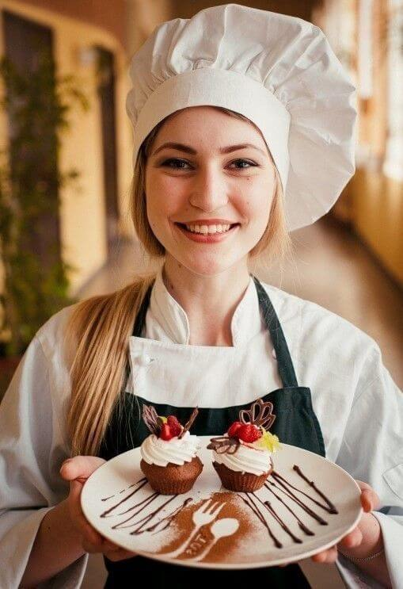

L'atelier Sucre & Passion
Notre histoire
Sucre & Passion est né en 2025, animé par une envie simple : offrir des moments de bonheur à travers la pâtisserie artisanale. De la cuisine familiale à l’atelier gourmand, notre aventure a grandi avec nos clients, nos rêves et notre passion du goût.
Nos valeurs
- Artisanat & Fait maison
- Chaque création est réalisée à la main, avec des ingrédients sélectionnés pour leur qualité.
- Créativité gourmande
- Nous transformons vos idées en douceurs uniques et sur mesure.
- Écoute & proximité
- Nos clients sont au cœur de notre démarche : chaque commande est un projet que nous partageons avec vous.
- Engagement responsable
- Nous privilégions les circuits courts, limitons les emballages, et veillons à une pâtisserie plus durable.
Notre équipe
Derrière Sucre & Passion, il y a une équipe passionnée et bienveillante : trois talents unis par la même passion. Ensemble, nous transformons vos envies en douceurs inoubliables.

Sarah
Décoratrice
L’art du détail au service de la gourmandise.
Nicolas
Spécialiste des gâteaux personnalisés
L’âme créative derrière vos gâteaux de rêve.
Mélissa
Chef pâtissière
Maîtresse des douceurs classiques et créatrice de saveurs uniques.